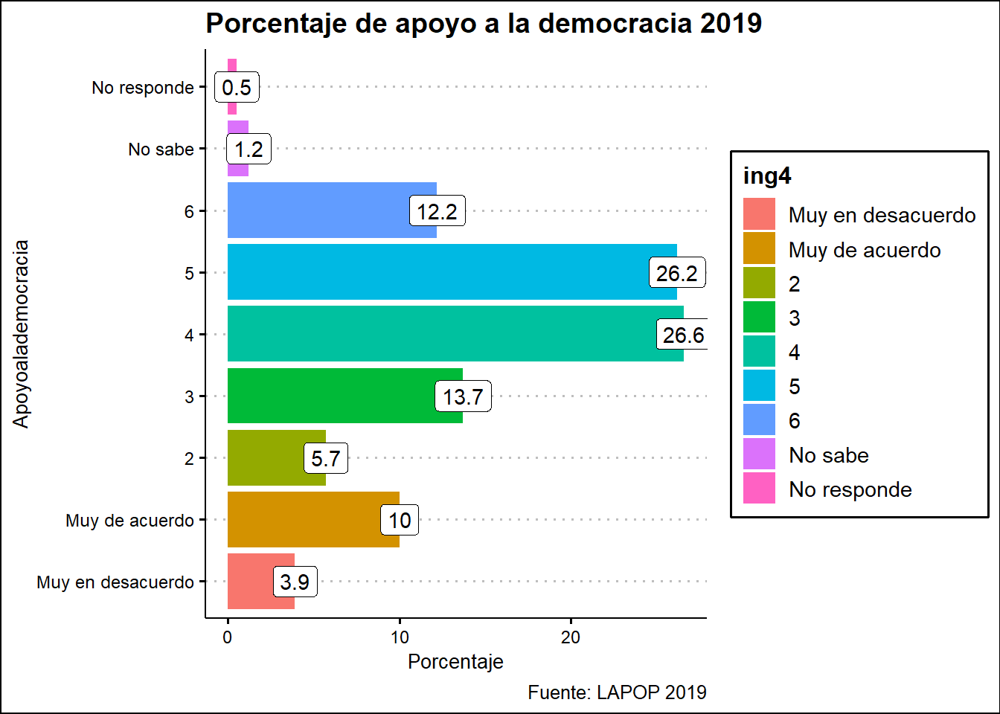

Capítulo 4 Midiendo el pulso de la democracia en el Perú, 2008 - 2019
Almendra Rodriguez Rivera
4.1 Introducción
La democracia constituye uno de los principios de organización sobre los cuales actúa el Estado (Mariani, 2008). En el presente trabajo se entiende a la democracia como “una forma de organización del poder en la sociedad con el objetivo de ampliar la ciudadanía, evitar o limitar la dominación de individuos o grupos que impidan este objetivo y lograr la perdurabilidad de la organización democrática” (O’Donnell, 2004, p. 22). Para ello, la democracia necesita de un Estado que la establezca como una forma de ciudadanía universal (Mariani, 2008), sin embargo, en América Latina este requisito constituye uno de los déficits democráticos.
En efecto, de acuerdo con estudios nacionales e internacionales, la democracia en América Latina afronta diversos problemas que amenazan la calidad del funcionamiento o, incluso, la propia supervivencia del régimen democrático. Según Carrión et al (2020), en el Perú, dos de cada tres consultados (66,3%) cree que su país es una democracia y constituye el segundo valor más alto tras Paraguay (67,3%). Asimismo, dada la conexión entre el estado de la opinión pública y la estabilidad democrática, el estancamiento del apoyo a la democracia en la región en general, y en Perú en particular, es preocupante (Carrión et al 2020). Cabe destacar que esto es preocupante porque la conjunción de dos aspectos como la satisfacción y el apoyo a la democracia se podrían traducir en el apoyo a autoritarismos y la búsqueda de vías no democráticas para alcanzar el poder político.
Por tal razón, a través del uso de encuestas de cultura política se pretende aproximar a un diágnostico del estado de la democracia en el Perú en torno a su satisfacción y apoyo. Así, la pregunta de investigación que orienta este proyecto es la siguiente: ¿Cómo ha ido variando la satisfacción y el apoyo hacia la democracia durante el periodo 2008 - 2019?
En función a ello, primero se exploran cada uno de los resultados bianuales desde el año 2008 hasta el 2019 y se complementa a través de un análisis longitudinal para cada una de las dos variables de estudio. Posteriormente, se presenta un gráfico de dispersión para observar la relación entre ambas variables: la satisfacción con la democracia y el apoyo a la democracia.
4.2 Paquetes usados
Con la finalidad de trabajar con las bases de datos, en primer lugar se cargan tres paquetes: tidyverse, haven y ggthemes. Si bien haven permite leer base de datos .sav y .dta que es el tipo de archivo en el cual se encuentran las bases de datos de LAPOP, en el caso de tidyverse se usa para la limpieza de datos con dplyr de modo que sea más útil para el análisis y la manipulación de data frames, así como para la exploración descriptiva de gráficos a través de ggplot2. Adicionalmente, se usa ggthemes para incluir temas a los gráficos de modo que mejore la visualización de datos en el análisis.
library(tidyverse)
library(haven)
library(ggthemes)4.3 Conjuntos de datos usados
Las base de datos con respecto a la cultura política que permite medir diversas variables relacionadas a la democracia se encuentran disponibles - para su descarga gratuita - como parte del Proyecto de Opinión Pública de América Latina (LAPOP) en el siguiente link: http://datasets.americasbarometer.org/database/index.php#
Este proyecto consiste en un estudio bianual que analiza desde distintas perspectivas la cultura política y la democrática de los países del continente. Así, la base de datos del Barómetro de las Américas contribuye en las discusiones y debates con respecto a la calidad y la fortaleza de la democracia en la región, y en específico, en el Perú desde el año de su medición: 2006. Como “barómetro,” el proyecto ofrece insumos importantes sobre las tendencias a largo plazo que permiten identificar retrocesos democráticos y resaltar las mejoras en las normas y actitudes de la ciudadanía. En efecto, el Barómetro de las Américas de LAPOP es una herramienta única para evaluar las experiencias del público con la gobernabilidad democrática (Zechmeister & Lupu, 2019).
En el siguiente bloque de código, se leen las seis bases de datos .sav y .dta y se usa as_factor() con el fin de obtener las etiquetas de datos codificadas en el formato original, SPSS o STATA, respectivamente.
LAPOP_2008 <- read_sav("data/PERU_LAPOP_2008 final data.sav") %>% as_factor()
LAPOP_2010 <- read_sav("data/PERU_LAPOP_2010 final data.sav") %>% as_factor()
LAPOP_2012 <- read_sav("data/PERU_LAPOP_2012 final data.sav") %>% as_factor()
LAPOP_2014 <- read_sav("data/PERU_LAPOP_2014 final data.sav") %>% as_factor()
LAPOP_2017 <- read_dta("data/PERU_LAPOP_2017 final data.dta") %>% as_factor()
LAPOP_2019 <- read_dta("data/PERU_LAPOP_2019 final data.dta") %>% as_factor()Posterior a la exploración de las bases de datos, con la finalidad de brindar un adecuado análisis exploratorio resulta fundamental iniciar con la limpieza de datos seleccionando las variables elegidas: year (año en el cual se realizó la encuesta), ing4 (apoyo a la democracia), pn4 (satisfacción con la democracia), wt (factor de expansión).
Para ello, se estandarizó la variable wt como numérica con el objetivo de lograr trabajar con las bases en conjunto. Cabe destacar que para las bases de datos del 2008 y 2010 se está considerado el valor 1 como wt, debido a que esta variable no se encontró previamente en la data.
Luego de crear con la función mutate el wt y la variable year, se seleccionan las variables elegidas para cada una de las bases de datos y posteriormente se crea la base de datos Democracia_subset que contiene las cuatro variables seleccionadas para el análisis: year, ing4,pn4,wt.
DemocraciaPeru_2008 <- LAPOP_2008 %>%
mutate(wt=1) %>%
mutate(year = 2008) %>%
select(year,ing4,pn4,wt)DemocraciaPeru_2010 <- LAPOP_2010 %>%
mutate(wt=1) %>%
mutate(year = 2010) %>%
select(year,ing4,pn4,wt)DemocraciaPeru_2012 <-LAPOP_2012 %>%
mutate(year = 2012, wt = as.double(wt))%>%
select(year,ing4,pn4,wt)DemocraciaPeru_2014 <-LAPOP_2014 %>%
mutate(year = 2014, wt = as.double(wt))%>%
select(year,ing4,pn4,wt)En la base de datos del año 2017 hay una muestra original LAPOP (1530 entrevistas efectivas) y una sobremuestra (1.117 entrevistas: 705 rurales y 412 urbanas) que se realizaron en lugares (municipios) no incluidos en la muestra nacional de LAPOP. Cabe señalar que, los resultados presentados se basan en el análisis de la muestra ponderada de Perú, de esta manera se refleja la distribución real de la población urbana y rural en las distintas localidades del país y es comparable con las muestras de los años anteriores. En otras palabras, solo se filtra la muestra original LAPOP que contiene 1530 observaciones de las 4 variables seleccionadas.
DemocraciaPeru_2017 <-LAPOP_2017 %>%
filter(sobremuestra == 0)%>%
mutate(year = 2017, wt = as.double(wt))%>%
select(year,ing4,pn4,wt)A diferencia del año 2017, en la ronda de 2019 no se hizo sobremuestra.
DemocraciaPeru_2019 <-LAPOP_2019 %>%
mutate(year = 2019, wt = as.double(wt))%>%
select(year,ing4,pn4,wt)A continuación,luego de limpiar y crear como objeto las bases de datos por año en el environment, se procede a juntar las filas seleccionadas de todas las bases de datos desde el año 2008 hasta el 2019 en una sola: Democracia_subset. Para ello, se utiliza la función bind_rows.
Democracia_subset<-bind_rows(DemocraciaPeru_2008,DemocraciaPeru_2010,
DemocraciaPeru_2012,DemocraciaPeru_2014,DemocraciaPeru_2017,
DemocraciaPeru_2019)Previo al análisis de los resultados, resulta necesario explorar una muestra de 100 observaciones del conjunto de datos a usar para el análisis.
Democracia_subset %>%
sample_n(100)| year | ing4 | pn4 | wt |
|---|---|---|---|
| 2019 | 4 | Insatisfecho(a) | 1.0000000 |
| 2017 | 5 | Very Dissatisfied | 1.7169729 |
| 2012 | Muy de acuerdo (7) | NA | 1.0000000 |
| 2019 | Muy de acuerdo | Satisfecho(a) | 1.0000000 |
| 2014 | 2 | Insatisfecho(a) | 1.0000000 |
| 2010 | Muy de acuerdo | Satisfecho | 1.0000000 |
| 2019 | 4 | Muy insatisfecho(a) | 1.0000000 |
| 2008 | ( 4 ) | Satisfecho | 1.0000000 |
| 2012 |
|
Satisfecho(a) | 1.0000000 |
| 2012 |
|
NA | 1.0000000 |
| 2010 | 6 | Insatisfecho | 1.0000000 |
| 2014 | 6 | Satisfecho(a) | 1.0000000 |
| 2008 | ( 6 ) | Insatisfecho | 1.0000000 |
| 2008 | ( 5 ) | Satisfecho | 1.0000000 |
| 2012 | Muy de acuerdo (7) | Insatisfecho(a) | 1.0000000 |
| 2008 | ( 3 ) | Insatisfecho | 1.0000000 |
| 2010 | 2 | Insatisfecho | 1.0000000 |
| 2019 | 4 | Muy insatisfecho(a) | 1.0000000 |
| 2017 | 4 | Very Dissatisfied | 1.7357377 |
| 2017 | 5 | Dissatisfied | 1.7169729 |
| 2019 | 4 | Satisfecho(a) | 1.0000000 |
| 2017 | 6 | Dissatisfied | 1.7077419 |
| 2010 | 2 | Insatisfecho | 1.0000000 |
| 2014 | 3 | Insatisfecho(a) | 1.0000000 |
| 2012 |
|
NA | 1.0000000 |
| 2008 | ( 6 ) | Satisfecho | 1.0000000 |
| 2019 | 5 | Insatisfecho(a) | 1.0000000 |
| 2012 |
|
NA | 1.0000000 |
| 2012 |
|
NA | 1.0000000 |
| 2012 |
|
NA | 1.0000000 |
| 2008 | ( 5 ) | Insatisfecho | 1.0000000 |
| 2014 | 3 | Insatisfecho(a) | 1.0000000 |
| 2019 | 5 | Insatisfecho(a) | 1.0000000 |
| 2019 | 5 | Muy insatisfecho(a) | 1.0000000 |
| 2008 | ( 5 ) | Insatisfecho | 1.0000000 |
| 2019 | 4 | Insatisfecho(a) | 1.0000000 |
| 2014 | Muy de acuerdo | NA | 1.0000000 |
| 2017 | 5 | Satisfied | 0.5414318 |
| 2008 | ( 4 ) | Satisfecho | 1.0000000 |
| 2010 | 6 | Insatisfecho | 1.0000000 |
| 2012 |
|
NA | 1.0000000 |
| 2019 | 5 | Satisfecho(a) | 1.0000000 |
| 2014 | 4 | Insatisfecho(a) | 1.0000000 |
| 2019 | 4 | Muy insatisfecho(a) | 1.0000000 |
| 2017 | 5 | Satisfied | 1.7077419 |
| 2019 | 5 | Insatisfecho(a) | 1.0000000 |
| 2017 | 2 | Very Dissatisfied | 0.7473882 |
| 2019 | 5 | Satisfecho(a) | 1.0000000 |
| 2010 | 5 | Satisfecho | 1.0000000 |
| 2017 | 3 | Very Dissatisfied | 1.7169729 |
| 2010 | Muy de acuerdo | Satisfecho | 1.0000000 |
| 2017 | Strongly Agree | Very Dissatisfied | 0.5414318 |
| 2008 | ( 5 ) | Insatisfecho | 1.0000000 |
| 2010 | 2 | Satisfecho | 1.0000000 |
| 2008 | Muy en desacuerdo | Insatisfecho | 1.0000000 |
| 2014 | 6 | Muy insatisfecho(a) | 1.0000000 |
| 2019 | 3 | Satisfecho(a) | 1.0000000 |
| 2014 | 3 | Satisfecho(a) | 1.0000000 |
| 2008 | ( 4 ) | Insatisfecho | 1.0000000 |
| 2019 | 6 | Muy satisfecho(a) | 1.0000000 |
| 2012 |
|
Satisfecho(a) | 1.0000000 |
| 2010 | 6 | Satisfecho | 1.0000000 |
| 2014 | 5 | Insatisfecho(a) | 1.0000000 |
| 2014 | Muy de acuerdo | Insatisfecho(a) | 1.0000000 |
| 2010 | 6 | Satisfecho | 1.0000000 |
| 2017 | Strongly Disagree | Dissatisfied | 1.7169729 |
| 2010 | Muy de acuerdo | Insatisfecho | 1.0000000 |
| 2008 | ( 5 ) | Satisfecho | 1.0000000 |
| 2008 | ( 4 ) | Satisfecho | 1.0000000 |
| 2008 | Muy de acuerdo | Satisfecho | 1.0000000 |
| 2017 | 3 | Dissatisfied | 1.1764445 |
| 2014 | 3 | Insatisfecho(a) | 1.0000000 |
| 2014 | Muy de acuerdo | Insatisfecho(a) | 1.0000000 |
| 2012 | Muy de acuerdo (7) | NA | 1.0000000 |
| 2010 | 5 | Satisfecho | 1.0000000 |
| 2008 | ( 5 ) | Muy insatisfecho | 1.0000000 |
| 2019 | 2 | Insatisfecho(a) | 1.0000000 |
| 2019 | Muy de acuerdo | Muy insatisfecho(a) | 1.0000000 |
| 2008 | Muy de acuerdo | Satisfecho | 1.0000000 |
| 2010 | 4 | Insatisfecho | 1.0000000 |
| 2014 | 6 | Satisfecho(a) | 1.0000000 |
| 2012 |
|
NA | 1.0000000 |
| 2014 | 5 | Satisfecho(a) | 1.0000000 |
| 2012 |
|
Satisfecho(a) | 1.0000000 |
| 2010 | 4 | Satisfecho | 1.0000000 |
| 2019 | Muy de acuerdo | Insatisfecho(a) | 1.0000000 |
| 2010 | Muy de acuerdo | Satisfecho | 1.0000000 |
| 2010 | 4 | Satisfecho | 1.0000000 |
| 2014 | 4 | Insatisfecho(a) | 1.0000000 |
| 2012 |
|
NA | 1.0000000 |
| 2010 | 4 | Satisfecho | 1.0000000 |
| 2008 | ( 4 ) | Satisfecho | 1.0000000 |
| 2019 | 4 | Insatisfecho(a) | 1.0000000 |
| 2012 |
|
NA | 1.0000000 |
| 2012 |
|
NA | 1.0000000 |
| 2014 | 3 | Insatisfecho(a) | 1.0000000 |
| 2017 | 5 | Satisfied | 0.3033811 |
| 2012 |
|
NA | 1.0000000 |
| 2017 | 3 | No Response | 0.3033811 |
| 2014 | 3 | Insatisfecho(a) | 1.0000000 |
A continuación, se observa la frecuencia de la primera variable seleccionada: el apoyo a la democracia (ing4). Asimismo, se presenta el porcentaje de apoyo a la democracia del total de encuestados teniendo en consideración el factor de expansión y excluyendo los valores perdidos (na.rm).
Apoyo_democracia <-Democracia_subset %>%
filter(!is.na(ing4)) %>%
group_by(year,ing4)%>%
summarise(apoyo_democracia = sum(wt,na.rm = TRUE))%>%
mutate(porcentaje = apoyo_democracia/sum(apoyo_democracia)*100)%>%
mutate(porcentaje = round (porcentaje, 1)) %>%
ungroup()Del mismo modo, se realiza dicho procedimiento para la otra variable seleccionada: satisfacción con la democracia (pn4).
Satisfaccion_democracia <- Democracia_subset %>%
filter(!is.na(pn4)) %>%
group_by(year,pn4)%>%
summarise(satisfaccion_democracia = sum(wt,na.rm = TRUE))%>%
mutate(porcentaje = satisfaccion_democracia/sum(satisfaccion_democracia)*100)%>%
mutate(porcentaje = round (porcentaje, 1)) %>%
ungroup()Asimismo, otro paso previo a la exploración de datos consiste en la recategorización de cada una de las variables. Primero, en el siguiente bloque de código, se recategoriza la variable satisfacción con la democracia (pn4) a través de la agrupación de las respuestas en dos categorías: Insatisfacción y Satisfacción. En los análisis que siguen, se agrupan los datos de tal forma que las respuestas de “muy insatisfecho” e “insatisfecho” se codifican conjuntamente como insatisfacción, y las respuestas “muy satisfecho” y “satisfecho” se codifican conjuntamente como satisfacción.
Satisfaccion_democracia2<- Satisfaccion_democracia %>%
mutate(categoria = case_when(
pn4 %in% c("Muy insatisfecho", "Insatisfecho", "Muy insatisfecho(a)",
"Insatisfecho(a)", "Very Dissatisfied", "Dissatisfied") ~ "Insatisfaccion",
pn4 %in% c("Muy satisfecho", "Satisfecho","Muy satisfecho(a)",
"Satisfecho(a)","Very Satisfied", "Satisfied") ~ "Satisfaccion",
TRUE ~ as.character(pn4)
)) Satisfaccion_democracia2| year | pn4 | satisfaccion_democracia | porcentaje | categoria |
|---|---|---|---|---|
| 2008 | Muy satisfecho | 20.00000 | 1.4 | Satisfaccion |
| 2008 | Satisfecho | 486.00000 | 33.8 | Satisfaccion |
| 2008 | Insatisfecho | 826.00000 | 57.5 | Insatisfaccion |
| 2008 | Muy insatisfecho | 105.00000 | 7.3 | Insatisfaccion |
| 2010 | Muy satisfecho | 35.00000 | 2.4 | Satisfaccion |
| 2010 | Satisfecho | 528.00000 | 36.6 | Satisfaccion |
| 2010 | Insatisfecho | 789.00000 | 54.8 | Insatisfaccion |
| 2010 | Muy insatisfecho | 89.00000 | 6.2 | Insatisfaccion |
| 2012 | Muy satisfecho(a) | 21.00000 | 3.0 | Satisfaccion |
| 2012 | Satisfecho(a) | 344.00000 | 48.8 | Satisfaccion |
| 2012 | Insatisfecho(a) | 318.00000 | 45.1 | Insatisfaccion |
| 2012 | Muy insatisfecho(a) | 22.00000 | 3.1 | Insatisfaccion |
| 2014 | Muy satisfecho(a) | 21.00000 | 1.5 | Satisfaccion |
| 2014 | Satisfecho(a) | 521.00000 | 36.4 | Satisfaccion |
| 2014 | Insatisfecho(a) | 797.00000 | 55.7 | Insatisfaccion |
| 2014 | Muy insatisfecho(a) | 93.00000 | 6.5 | Insatisfaccion |
| 2017 | Very Satisfied | 81.84035 | 3.9 | Satisfaccion |
| 2017 | Satisfied | 504.93559 | 24.0 | Satisfaccion |
| 2017 | Dissatisfied | 1163.29129 | 55.3 | Insatisfaccion |
| 2017 | Very Dissatisfied | 305.55985 | 14.5 | Insatisfaccion |
| 2017 | Don’t Know | 35.01354 | 1.7 | Don’t Know |
| 2017 | No Response | 11.67508 | 0.6 | No Response |
| 2019 | Muy satisfecho(a) | 54.00000 | 3.6 | Satisfaccion |
| 2019 | Satisfecho(a) | 363.00000 | 23.9 | Satisfaccion |
| 2019 | Insatisfecho(a) | 854.00000 | 56.1 | Insatisfaccion |
| 2019 | Muy insatisfecho(a) | 220.00000 | 14.5 | Insatisfaccion |
| 2019 | No responde | 7.00000 | 0.5 | No responde |
| 2019 | No sabe | 23.00000 | 1.5 | No sabe |
Segundo, a continuación se realiza el mismo procedimiento de recategorización para la variable apoyo a la democracia (ing4) donde se consideran las respuestas en la porción de la escala que indica estar de acuerdo, esto es los valores de 5 a 7, para indicar el porcentaje de apoyo a la democracia.
apoyo_democracia2<- Apoyo_democracia %>%
mutate(categoria = case_when(
ing4 %in% c("5", "6", "Muy de acuerdo", "Strongly Agree","(5)", "(6)",
"Muy de acuerdo (7)", "( 5 )", "( 6 )") ~ "Apoyo",
TRUE ~ as.character(ing4)
)) apoyo_democracia2| year | ing4 | apoyo_democracia | porcentaje | categoria |
|---|---|---|---|---|
| 2008 | Muy en desacuerdo | 41.00000 | 2.8 | Muy en desacuerdo |
| 2008 | ( 2 ) | 64.00000 | 4.4 | ( 2 ) |
| 2008 | ( 3 ) | 140.00000 | 9.7 | ( 3 ) |
| 2008 | ( 4 ) | 296.00000 | 20.5 | ( 4 ) |
| 2008 | ( 5 ) | 322.00000 | 22.3 | Apoyo |
| 2008 | ( 6 ) | 327.00000 | 22.7 | Apoyo |
| 2008 | Muy de acuerdo | 253.00000 | 17.5 | Apoyo |
| 2010 | Muy en desacuerdo | 70.00000 | 4.9 | Muy en desacuerdo |
| 2010 | Muy de acuerdo | 230.00000 | 16.0 | Apoyo |
| 2010 | 2 | 94.00000 | 6.5 | 2 |
| 2010 | 3 | 188.00000 | 13.1 | 3 |
| 2010 | 4 | 341.00000 | 23.7 | 4 |
| 2010 | 5 | 266.00000 | 18.5 | Apoyo |
| 2010 | 6 | 250.00000 | 17.4 | Apoyo |
| 2012 | Muy en desacuerdo (1) | 31.00000 | 2.1 | Muy en desacuerdo (1) |
| 2012 |
|
70.00000 | 4.8 |
|
| 2012 |
|
183.00000 | 12.5 |
|
| 2012 |
|
305.00000 | 20.9 |
|
| 2012 |
|
363.00000 | 24.8 | Apoyo |
| 2012 |
|
284.00000 | 19.4 | Apoyo |
| 2012 | Muy de acuerdo (7) | 225.00000 | 15.4 | Muy de acuerdo (7) |
| 2014 | Muy en desacuerdo | 55.00000 | 3.8 | Muy en desacuerdo |
| 2014 | Muy de acuerdo | 241.00000 | 16.8 | Apoyo |
| 2014 | 2 | 85.00000 | 5.9 | 2 |
| 2014 | 3 | 174.00000 | 12.1 | 3 |
| 2014 | 4 | 279.00000 | 19.5 | 4 |
| 2014 | 5 | 339.00000 | 23.6 | Apoyo |
| 2014 | 6 | 261.00000 | 18.2 | Apoyo |
| 2017 | 2 | 102.87376 | 4.9 | 2 |
| 2017 | 3 | 248.53232 | 11.8 | 3 |
| 2017 | 4 | 512.82385 | 24.4 | 4 |
| 2017 | 5 | 525.80941 | 25.0 | Apoyo |
| 2017 | 6 | 308.55496 | 14.7 | Apoyo |
| 2017 | Strongly Disagree | 95.42827 | 4.5 | Strongly Disagree |
| 2017 | Strongly Agree | 280.00671 | 13.3 | Apoyo |
| 2017 | No Response | 7.13661 | 0.3 | No Response |
| 2017 | Don’t Know | 21.14981 | 1.0 | Don’t Know |
| 2019 | Muy en desacuerdo | 60.00000 | 3.9 | Muy en desacuerdo |
| 2019 | Muy de acuerdo | 152.00000 | 10.0 | Apoyo |
| 2019 | 2 | 87.00000 | 5.7 | 2 |
| 2019 | 3 | 208.00000 | 13.7 | 3 |
| 2019 | 4 | 404.00000 | 26.6 | 4 |
| 2019 | 5 | 399.00000 | 26.2 | Apoyo |
| 2019 | 6 | 186.00000 | 12.2 | Apoyo |
| 2019 | No sabe | 18.00000 | 1.2 | No sabe |
| 2019 | No responde | 7.00000 | 0.5 | No responde |
En el último apartado se propone explorar con respecto a la relación entre la satisfacción y el apoyo a la democracia, y para ello es importante filtrar en un data subset las únicas categorías con las cuales se va a analizar: satisfacción y apoyo.
Satisfaccion_democracia3 <-Satisfaccion_democracia2 %>%
filter(categoria %in% c("Satisfaccion")) %>%
group_by(year,categoria)%>%
summarise(Satisfaccion_democracia = sum(porcentaje)) %>%
ungroup()Apoyo_democracia3 <-apoyo_democracia2 %>%
filter(categoria == "Apoyo") %>%
group_by(year,categoria)%>%
summarise(Apoyo_democracia = sum(porcentaje)) %>%
ungroup()En esa misma línea, para poder trabajar en un solo data frame se usa la función left join según la variable year para obtener los datos de apoyo y satisfacción con la democracia. Ahora con este objeto se puede elaborar posteriormente el gráfico de dispersión.
apoyoysatisfaccion_democracia <-left_join(Apoyo_democracia3,Satisfaccion_democracia3, by = "year")apoyoysatisfaccion_democracia| year | categoria.x | Apoyo_democracia | categoria.y | Satisfaccion_democracia |
|---|---|---|---|---|
| 2008 | Apoyo | 62.5 | Satisfaccion | 35.2 |
| 2010 | Apoyo | 51.9 | Satisfaccion | 39.0 |
| 2012 | Apoyo | 44.2 | Satisfaccion | 51.8 |
| 2014 | Apoyo | 58.6 | Satisfaccion | 37.9 |
| 2017 | Apoyo | 53.0 | Satisfaccion | 27.9 |
| 2019 | Apoyo | 48.4 | Satisfaccion | 27.5 |
4.4 Resultados
Posterior a la limpieza de datos, a continuación se inicia con el análisis exploratorio de resultados tanto para la satisfacción, apoyo a la democracia, así como su correlación a través de un gráfico de dispersión.
4.4.1 Desapego democrático: El apoyo y la satisfacción con la democracia en franco descenso
El apoyo de los ciudadanos a la democracia es fundamental para el mantenimiento de sistemas libres y justos, así como también para reforzar el trabajo en contra del retroceso democrático (Zechmeister & Lupu, 2019).En esa misma línea, considerando que el apoyo mayoritario de la ciudadanía hacia el gobierno democrático es una pieza fundamental para el mantenimiento del mismo (Linz y Stepan, 1996), desde su creación, el proyecto del Barómetro de las Américas ha realizado la siguiente pregunta con el fin de medir el apoyo a la democracia:
- ING4. Cambiando de nuevo el tema, puede que la democracia tenga problemas, pero es mejor que cualquier otra forma de gobierno. ¿Hasta qué punto está de acuerdo o en desacuerdo con esta frase?
Sin embargo, la evaluación de la democracia contempla no solo el apoyo sostenido en una democracia electoral sino que con el propósito de comprender mejor el apoyo específico a la democracia en la región resulta importante conocer las percepciones de la ciudadanía sobre cómo funciona la democracia. Tal como se menciona en el informe del Barómetro de las Américas 2018/2019, “la satisfacción con la democracia y la condición de democracia del sistema político son importantes para entender el apoyo popular a la democracia, y sirven como base del compromiso ciudadano con ella, condición fundamental para la consolidación de la democracia” (Carrión et al 2020). En ese sentido, se ha realizado la siguiente pregunta con respecto a la satisfacción con la democracia:
- PN4. En general, ¿usted diría que está muy satisfecho(a), satisfecho(a), insatisfecho(a) o muy insatisfecho(a) con la forma en que la democracia funciona en Perú?
Para dar respuesta a la pregunta inicial que orienta el presente trabajo, a continuación, se inicia con la presentación de resultados de apoyo y satisfacción con la democracia para cada uno de los años de estudio desde el año más reciente, 2019, hasta la medición del año 2008.
Con respecto al apoyo a la democracia si tenemos en consideración que los entrevistados entregan una respuesta que va de 1 a 7, donde 1 significa “muy en desacuerdo” y 7 significa “muy de acuerdo.” En el siguiente gráfico, se observa que para el año 2019, las principales respuestas se concentran en el nivel 4 (26,6%) y 5 (26,2%), respectivamente. Así, más del 50% de datos se ubican allí lo cual nos indica que hay un nivel medio de apoyo a la democracia, sin embargo, si se considera desde el valor 5 al 7 se obtiene que solo el 48,4% apoya a la democracia como sistema de gobierno en el año 2019.
Apoyo_democracia %>%
filter(year == "2019") %>%
select(year,ing4,porcentaje) %>%
ggplot(aes(porcentaje,ing4)) +
geom_col(aes(fill = ing4)) +
labs(title = "Porcentaje de apoyo a la democracia 2019") +
labs(caption = "Fuente: LAPOP 2019",x = "Porcentaje", y = "Apoyoalademocracia") +
geom_label(aes(label = porcentaje)) +
theme_clean()
La satisfacción con la democracia “es un indicador del apoyo al desempeño del régimen democrático” (Linde y Eckman 2003, p. 399.). En efecto, si se tiene en cuenta que los entrevistados pueden dar una respuesta que va de 1 a 4, donde 1 significa “muy satisfecho”y 4 significa “muy insatisfecho.” Para el año 2019, se observa que la insatisfacción con la democracia supera el 70%, mientras que solo el 27,5% de los peruanos está satisfecho con el funcionamiento de la democracia en el Perú.
Cabe destacar que si bien la satisfacción pública con el funcionamiento de la democracia también ha descendido, la tolerancia a los golpes de estado ejecutivos - es decir, que el Ejecutivo cierre el Congreso- ha continuado en aumento (Zechmeister & Lupu, 2019; Bustamante & Zechmeister, 2019).
Satisfaccion_democracia %>%
filter(year == "2019") %>%
select(pn4,porcentaje) %>%
ggplot(aes(porcentaje,pn4)) +
geom_col(aes(fill = pn4 )) +
labs(title = "Porcentaje de satisfacción con la democracia 2019") +
labs(caption = "Fuente: LAPOP 2019",x = "Porcentaje", y = "Sastifaccionconlademocracia") +
geom_label(aes(label = porcentaje)) +
theme_clean()El apoyo a la democracia en el año 2017 indica que las principales respuestas se concentran en el nivel 4 (24,4%) y 5 (25%). De este modo, cerca del 50% de los datos se ubican en un nivel medio de apoyo a la democracia y si se considera desde el valor 5 al 7 se obtiene que el 53% apoya a la democracia en el año 2017.
Apoyo_democracia %>%
filter(year == "2017") %>%
select(year,ing4,porcentaje) %>%
ggplot(aes(porcentaje,ing4)) +
geom_col(aes(fill = ing4)) +
labs(title = "Porcentaje de apoyo a la democracia 2017") +
labs(caption = "Fuente: LAPOP 2017",x = "Porcentaje", y = "Apoyoalademocracia") +
geom_label(aes(label = porcentaje)) +
theme_clean()Con respecto a la sastifacción con la democracia para el año 2017, resulta preponderante la insastisfacción con la democracia la cual se ubica en 69,8%, mientras que la satisfacción cerca al 28%; al igual que en el año 2019.
Satisfaccion_democracia %>%
filter(year == "2017") %>%
select(pn4,porcentaje) %>%
ggplot(aes(porcentaje,pn4)) +
geom_col(aes(fill = pn4 )) +
labs(title = "Porcentaje de satisfacción con la democracia 2017") +
labs(caption = "Fuente: LAPOP 2017",x = "Porcentaje", y = "Sastifaccionconlademocracia") +
geom_label(aes(label = porcentaje)) +
theme_clean()Para el año 2014, el porcentaje de apoyo a la democracia que incluye desde los valores 5 al 7 se ubica en 58,6%; es decir, más del 50% de peruanos estaba de acuerdo con el apoyo a la democracia en dicho año; a diferencia de las mediciones posteriores como en el 2019 donde los valores no superan el 50% de apoyo a la democracia.
Apoyo_democracia %>%
filter(year == "2014", !is.na(ing4)) %>%
select(year,ing4,porcentaje) %>%
ggplot(aes(porcentaje,ing4)) +
geom_col(aes(fill = ing4)) +
labs(title = "Porcentaje de apoyo a la democracia 2014") +
labs(caption = "Fuente: LAPOP 2014",x = "Porcentaje", y = "Apoyoalademocracia") +
geom_label(aes(label = porcentaje)) +
theme_fivethirtyeight() +
theme_clean()Al revisar la sastifacción con la democracia para el año 2014, se encuentra que el 62,2% estaba insatisfecho con la democracia, y más del 35% de peruanos se sentía satisfecho con su funcionamiento. Cabe destacar que esto evidencia la tendencia a decrecimiento sostenido de la satisfacción con la democracia, ya que para el 2017 y 2019, la satisfacción con la democracia por parte de los peruanos no supera el 30%.
Satisfaccion_democracia %>%
filter(year == "2014",!is.na(pn4)) %>%
select(pn4,porcentaje) %>%
ggplot(aes(pn4,porcentaje)) +
geom_col(aes(fill = pn4 )) +
labs(title = "Porcentaje de satisfacción con la democracia 2014") +
labs(caption = "Fuente: LAPOP 2014",x = "Porcentaje", y = "Sastifaccionconlademocracia") +
geom_label(aes(label = porcentaje)) +
theme_clean()En el año 2012, el porcentaje de apoyo a la democracia que incluye desde los valores 5 a 7 se ubica en 59,6%; es decir, cerca del 60% de peruanos estaba de acuerdo con el apoyo a la democracia en el 2012. Por el contrario, una menor proporción no apoyó la democracia como forma de gobierno preferible.
Apoyo_democracia %>%
filter(year == "2012", !is.na(ing4)) %>%
select(year,ing4,porcentaje) %>%
ggplot(aes(porcentaje,ing4)) +
geom_col(aes(fill = ing4)) +
labs(title = "Porcentaje de apoyo a la democracia 2012") +
labs(caption = "Fuente: LAPOP 2012",x = "Porcentaje", y = "Apoyoalademocracia") +
geom_label(aes(label = porcentaje)) +
theme_clean()Si se observa la sastifacción con la democracia para dicho año, se encuentra que el 51,8% de peruanos se sentía satisfecho con la democracia y el 48,2% estaba insatisfecho con la democracia.
Satisfaccion_democracia %>%
filter(year == "2012") %>%
select(pn4,porcentaje) %>%
ggplot(aes(porcentaje,pn4)) +
geom_col(aes(fill = pn4 )) +
labs(title = "Porcentaje de satisfacción con la democracia 2012") +
labs(caption = "Fuente: LAPOP 2012",x = "Porcentaje", y = "Sastifaccionconlademocracia") +
geom_label(aes(label = porcentaje)) +
theme_clean()
Para el año 2010, el porcentaje de apoyo a la democracia que incluye desde los valores 5 al 7 se ubica en 51,9%; en otras palabras, más del 50% de peruanos estaba de acuerdo con el apoyo a la democracia en el 2010.
Apoyo_democracia %>%
filter(year == "2010", !is.na(ing4)) %>%
select(year,ing4,porcentaje) %>%
ggplot(aes(porcentaje,ing4)) +
geom_col(aes(fill = ing4)) +
labs(title = "Porcentaje de apoyo a la democracia 2010") +
labs(caption = "Fuente: LAPOP 2010",x = "Porcentaje", y = "Apoyoalademocracia") +
geom_label(aes(label = porcentaje)) +
theme_clean()Al revisar la sastifacción con la democracia para el año 2010, se observa que solo el 39% de los peruanos estaba satisfecho con la democracia, mientras que en las categorías insatisfecho y muy insatisfecho se encuentran valores de 54,8% y 6,2%, respectivamente.
Satisfaccion_democracia %>%
filter(year == "2010", !is.na(pn4)) %>%
select(pn4,porcentaje) %>%
ggplot(aes(pn4,porcentaje)) +
geom_col(aes(fill = pn4 )) +
labs(title = "Porcentaje de satisfacción con la democracia 2010") +
labs(caption = "Fuente: LAPOP 2010",x = "Porcentaje", y = "Sastifaccionconlademocracia") +
geom_label(aes(label = porcentaje))+
theme_clean()En el año 2008, el porcentaje de apoyo a la democracia que incluye desde los valores 5 a 7 se ubicó en 62,5%. Sin embargo, se encuentra un 37,4% de peruanos que no apoyó a la democracia como mejor forma de gobierno.
Apoyo_democracia %>%
filter(year == "2008", !is.na(ing4)) %>%
select(year,ing4,porcentaje) %>%
ggplot(aes(porcentaje,ing4)) +
geom_col(aes(fill = ing4)) +
labs(title = "Porcentaje de apoyo a la democracia 2008") +
labs(caption = "Fuente: LAPOP 2008",x = "Porcentaje", y = "Apoyoalademocracia") +
geom_label(aes(label = porcentaje)) +
theme_clean()Con respecto a la sastifacción con la democracia para el año 2008, solo el 35,2% de los peruanos estaba satisfecho con la democracia, mientras que en las categorías insatisfecho y muy insatisfecho se encuentran valores de 57,5% y 7,3%, respectivamente.
Satisfaccion_democracia %>%
filter(year == "2008", !is.na(pn4)) %>%
select(pn4,porcentaje) %>%
mutate(porcentaje = round (porcentaje, 1)) %>%
ggplot(aes(pn4,porcentaje)) +
geom_col(aes(fill = pn4 )) +
labs(title = "Porcentaje de satisfacción con la democracia 2008") +
labs(caption = "Fuente: LAPOP 2008",x = "Porcentaje", y = "Sastifaccionconlademocracia") +
geom_label(aes(label = porcentaje)) +
theme_clean()4.4.2 Satisfacción con la democracia, Perú 2008 - 2019
Luego del análisis por cada uno de los años de estudio según la variable seleccionada, se pretende realizar un análisis longitudinal a través de un gráfico según las dos variables. Primero, iniciamos con la satisfacción con la democracia en el Perú durante el periodo 2008 - 2019.
En este gráfico se muestra el porcentaje de peruanos satisfechos con la democracia a través del tiempo. Aquí se encuentra una tendencia interesante la cual muestra que mientras la insatisfacción ha ido creciendo y posicionándose cerca al 70% en las dos últimas mediciones, efectivamente la satisfacción ha descendido marcadamente desde el año 2012 - su pico más alto de satisfacción (48,2%)- llegando a ubicarse para el 2019 en 27,5%. Cabe destacar que apenas dos puntos porcentuales por encima de Panamá (26,1%), Perú tiene el segundo más bajo nivel de satisfacción promedio con el funcionamiento de la democracia en la región durante el año 2019: 28%.
Satisfaccion_democracia2 %>%
filter(categoria %in% c("Satisfaccion","Insatisfaccion")) %>%
group_by(year,categoria)%>%
summarise(Satisfaccion_democracia = sum(porcentaje))%>%
ggplot(aes(year,Satisfaccion_democracia)) +
geom_line(aes(color = categoria )) +
geom_label(aes(label = Satisfaccion_democracia)) +
labs(title = "Satisfacción con la democracia, Perú 2008 - 2019") +
labs(caption = "Fuente:LAPOP 2008 - 2019",x = "year", y = "Sastifaccion_democracia") +
scale_x_continuous(breaks = c(2008, 2010, 2012, 2014, 2017, 2019)) +
theme_economist_white()4.4.3 Apoyo a la democracia, Perú 2008 - 2019
Segundo, el nivel de apoyo a la democracia en Perú a través del tiempo se muestra en el siguiente gráfico. Si bien se han registrado variaciones desde los inicios de la medición, la tendencia reciente es claramente a la baja. Desde el 2012, el apoyo promedio a la democracia en Perú decrece en cada medición y ha caído cerca de quince puntos porcentuales durante la última década. De hecho, el apoyo a la democracia como sistema registrado por la encuesta 2019 es el más bajo desde que comenzaron las mediciones, solo el 48,4% consideran a la democracia como el régimen político preferible. También la satisfacción con el funcionamiento de la democracia registra sus menores niveles.
En ese sentido, en el siguiente apartado se propone explorar con respecto a la relación entre ambas variables numéricas.
apoyo_democracia2 %>%
filter(categoria == "Apoyo") %>%
group_by(year,categoria)%>%
summarise(Apoyo_democracia = sum(porcentaje))%>%
ggplot(aes(year,Apoyo_democracia)) +
geom_line(aes(color = categoria )) +
geom_label(aes(label = Apoyo_democracia)) +
labs(title = "Apoyo a la democracia, Perú 2008 - 2019") +
labs(caption = "Fuente:LAPOP 2008 - 2019",x = "year", y = "Apoyo_democracia") +
scale_x_continuous(breaks = c(2008, 2010, 2012, 2014, 2017, 2019)) +
theme_economist()4.4.4 ¿Existe relación entre el apoyo y la satifacción con la democracia en el Perú?
Hacemos el diagrama de dispersión para observar la posible relación entre ambas variables. Tal como se aprecia, según la ubicación de los puntos en el gráfico de dispersión no hay una relación clara entre el apoyo y la satisfacción con la democracia. En efecto, una limitación es la poca cantidad de datos observables en el gráfico que no muestra una tendencia definida en la relación de ambas variables. Si se analiza en función a los años se encuentra que la relación se vuelve más difusa para el año 2010 donde no se aproxima a la línea del gráfico de dispersión.
apoyoysatisfaccion_democracia %>%
ggplot(aes(Satisfaccion_democracia, Apoyo_democracia)) +
geom_point(color="red") +
labs(title = "Apoyo y satisfacción con la democracia, Perú 2008 - 2019",
caption = "Fuente:LAPOP 2008 - 2019") +
theme_stata()
4.5 Conclusiones
4.5.1 La democracia en el Perú pierde seguidores
En conclusión, los problemas de la democracia y la falta de resultados en América Latina influyen en la opinión de los ciudadanos sobre su apoyo a este régimen político: la democracia. Los resultados del Latinobarómetro revelan el deterioro regular y ascendente de las democracias como fenómeno común y preocupante para América Latina, y el Perú no es la excepción. De acuerdo con los datos expuestos y el último Informe del Barómetro de las Américas 2018/19, del Proyecto de Opinión Pública de América Latina (LAPOP), el apoyo a la democracia – así como la satisfacción con el funcionamiento de la misma – ha ido variando sostenidamente durante la última década de evaluación con una tendencia hacia la disminución progresiva.
Con respecto al apoyo a la democracia en el Perú, se identifica un descenso sostenido desde el 2012 y para el 2019 se registró que menos del 50% de peruanos apoya la democracia como la mejor forma de gobierno en el país, uno de los niveles más bajos en la región – solo por encima de Bolivia, Guatemala y Honduras- y el menor valor desde el 2006 que se realizan estas mediciones del Barómetro de las Américas en el Perú, estando siempre por debajo del promedio regional. Asimismo, si nos referimos al nivel de satisfacción de los peruanos con la democracia los resultados tampoco son alentadores, en los últimos años la satisfacción con la democracia cayó a 28%.
En efecto, tal como argumentan Levitsky & Ziblatt (2018), la forma en cómo mueren las democracias mayoritariamente se evidencia en el debilitamiento gradual y silencioso de éstas. Por ejemplo, el caso peruano es relevador para explorar mayores espacios de análisis con respecto al debilitamiento de la democracia evidenciada en la falta de apoyo y sastisfacción con esta forma de gobierno. De hecho, al revisar la relación entre apoyo y satisfacción con la democracia a través de un gráfico de dispersión se encuentra que no hay una relación clara entre ambas variables, pese a que ambas a través del tiempo han ido disminuyendo en su evaluación.
Finalmente, esta aproximación inicial nos brinda un primer panorama con respecto al estado de la democracia en el Perú el cual debe ser analizado con mayor profundidad a través del uso de otras variables que permitan complementar un diagnóstico con el objetivo de mejorar la legitimidad y la representación política de la ciudadanía. Ello teniendo en consideración que “la democracia electoral tiene mayor probabilidad de ser legitimada en la medida que haya un alto nivel de satisfacción con la democracia y que la ciudadanía perciba que el sistema es democrático” (Carrión et al 2020). En efecto, ambos elementos resultan ser componentes centrales para la gobernabilidad democrática del país.
4.6 Referencias
Carrión, J. F., Zárate, P., & Zechmeister, E. J. (2020). Cultura política de la democracia en Perú y en las Américas, 2018/19: Tomándole el pulso a la democracia. Disponible en: https://iep.org.pe
Levitsky, S., & Ziblatt, D. (2018). How democracies die. Broadway Books.
Linde, Jonas y Joakim Ekman. 2003. “Satisfaction with Democracy; A Note on the Frequently Used Indicator in Comparative Politics.” European Journal of Political Research 42: 391-408.
Linz, J.J. & Stepan, A. (1996). Problems of democratic consolidation. Southern Europe, South America, and Post-Comunist Europe. Baltimore: John Hopkins University Press.
Mariani, R. (coord.). (2008). Democracia/Estado/Ciudadanía: hacia un Estado de y para la democracia en América Latina. Lima: Sede PNUD (Programa de las Naciones Unidas para el Desarrollo - PNUD).
Mariani, R. (2008). Democracia, Estado y construcción del sujeto (ciudadanía). En Mariani, R. (coord.). Democracia/Estado/Ciudadanía: Hacia un Estado de y para la Democracia en América Latina. Lima: Sede PNUD (Programa de las Naciones Unidas para el Desarrollo - PNUD), pp. 79-98.
O’Donnell, G. (2004). Notas sobre la democracia en América Latina. En La democracia en América Latina. Hacia una democracia de ciudadanas y ciudadanos. Anexo: El debate conceptual sobre la democracia (CD ROM). Buenos Aires: PNUD, Aguilar, Altea, Taurus, Alfaguara, pp. 11-82.
O’Donnell, G. (2004). El desarrollo de la democracia en América Latina. En La democracia en América Latina. Hacia una democracia de ciudadanas y ciudadanos. Anexo: El debate conceptual sobre la democracia (CD ROM). Buenos Aires: PNUD, Aguilar, Altea, Taurus, Alfaguara, pp. 33-73.
O’Donnell, G. (2004). Acerca del Estado en América Latina contemporánea: diez tesis para discusión. En La democracia en América Latina. Hacia una democracia de ciudadanas y ciudadanos. Anexo: El debate conceptual sobre la democracia (CD ROM). Buenos Aires: PNUD, Aguilar, Altea, Taurus, Alfaguara, pp. 149-192.
Ramírez Bustamante, Mariana V., y Elizabeth J. Zechmeister. 2019. Toleranciaa los “golpes de Estado” ejecutivos en Perú. Topical Brief, número 35: 1-5. LAPOP: Nashville,TN. https://www.vanderbilt.edu/lapop/insights/ITB035es.pdf
Zechmeister, E. J., & Lupu, N. (2019). El Barómetro de las Américas 2018/19.